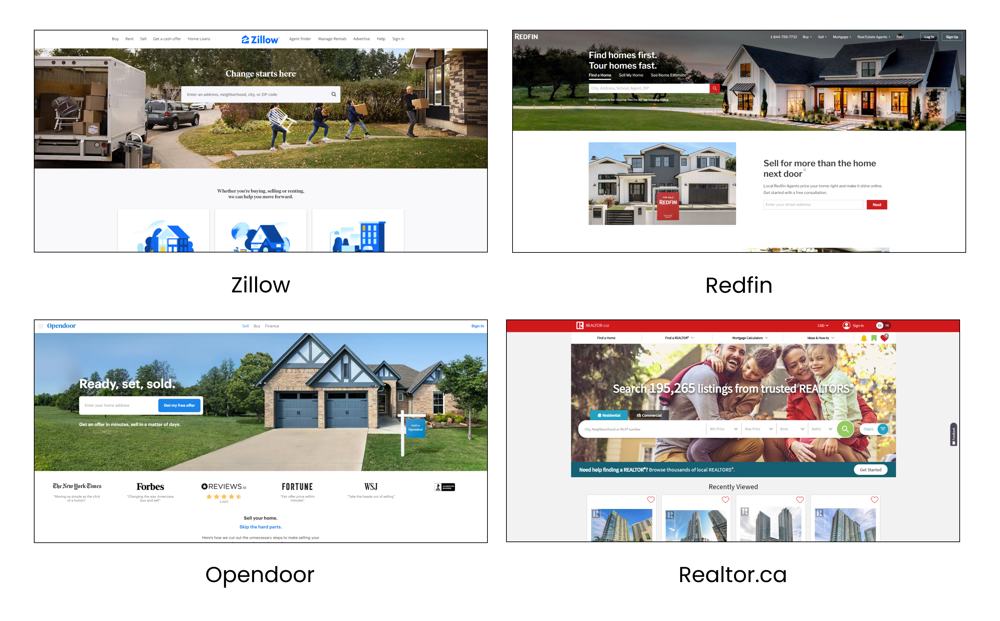
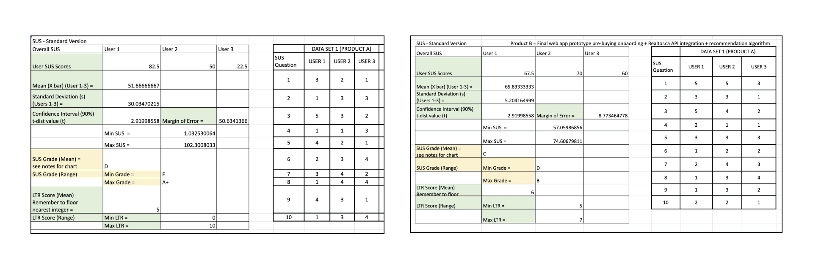

Problem Definition
We get it, buying a home is hard! Homes are rising in price and It takes
a lot of money to buy a house so you have to make sure you're doing it
right the first time. But for most people who are buying their first homes,
they don't have the expertise to navigate through the complex process or
their ideal preferences.
Users end up feeling pressured, frustrated and overwhelmed during the
home buying process. Resulting in new home owners temporarily giving
up and discouraged from the idea of home ownership.

Popular real estate sites used primarily within Canada and USA
Design Challenges
Data Paywalls
There is no open source database of frequently detailed home listings.
Unfortunately a majority of MLS data is barred unless a registered real
estate agent has access to the database.
An intuitive Onboarding
We need to establish a balance between collecting personal and financial
information to make initial recommendations (the cold start problem)
Recommendation Engine
How can we incorporate a recommendation engine that is not
only accurate but trustworthy that user’s will contribute their
data towards?
Product Goals
Holistic Experience
Collection of both financial and personal preferences to take
into account when making recommendations. Realistic housing
options that are within budget and in reason of buyer preferences.
Unbiased Listings
Listings surfaced to the user contain a reduced bias free from
external influence and sponsors. Listings are best fit to a user’s
profile depending on the information provided
Evolving Recommendations
Recommendations change depending on a user’s changing preferences from
implicit and explicit data gathered during system usage.
From a First Time Home Buyer's Perspective
User Insight
We wanted to get a better understanding of the background and the
mindset experienced recent buyers have experienced during the current housing market.
To record insight from our primary users, we conducted 7 structured user interviews
targeted at new home buyers or owners with no specific age requirement spread out over
a period of 5 weeks.
Below are the highlights from an affinity diagramming session done on Miro.
Common themes found during this process include the real estate agent,
financial remarks, search criteria, listing sites and process issues

Affinity diagramming highlights from Miro
Crowdsourcing Data
In addition to user interviews we posted a Google survey on
Reddit under multiple home buying subreddits to gather further
data on the home buying process, home buying tools and their
demographic. From the 34 responses, some of the highlights include…
- 42.9% of home buyers were using Redfin.com to purchase a home
- 61.1% of users said searching for a home was the most difficult part of their experience
- 82.9% of user’s stated that using the home buying tools on popular sites like Zillow and Redfin helped when making a buying decision

Summary of data collected from our Google survey
Systems Block Diagram
Recommendation System High-level Design
Using the research we gathered we decided to best emulate the
home buying process we were to divide our system into 2 sections,
pre-buying and searching systems. The pre-buying phase is where we would
collect user financial information (income, debts, loans, expenses etc.)
and preferences (price, location, bedrooms, bathrooms etc.)
Using this information we could fetch a few preliminary listings from
the Realtor.ca API based on existing criteria. Next user interaction from
viewing listings, scrolling and favoriting actions would be recorded.
In the backend our system used TF-IDF to find keyword similarities between
listing description and Google’s VGG-16 Pre-trained network to find image
similarity between home styles. With this method we can now recommend
homes based off of an averaged “ideal home” curated by continually evolving
user interaction.

Block diagram flow of backend recommendation system
Design Iterations and Adjustments
Initial Ideation and Flow
After some research into other personalized experience apps
I began sketching my ideas and variations of the user flow

Rough notebook sketches of my first iteration wireframes

First iteration wireframes on Figma
Proposed User Flow
After a few rounds of internal feedback from the team, I arrived at the 2nd
iteration site map seen below. To the team, logically this flow made sense
according to our proposed algorithm. Since we haven’t done any user testing
we don’t actually know if this is the best answer to resolve our product or
design goals.

2nd iteration wireframes of user flow

In-depth view of 2nd iteration wireframes
Design Flaws
Real-world Prototype Feedback
To test this iteration we conducted 3 user tests which included a
cognitive walkthrough, post interview questions and a standard
usability score test. User’s were asked to fill out the onboarding
flow and browse through the recommendations within our Figma prototype.
In reality the feedback we received on our prototype was less than stellar.
Generalized assumptions we made based on our user interviews were incorrect
and revealed the various flaws within our prototype.
Data Privacy Awareness
One issue users immediately raised were concerns over financial and personal
data that was benign collected. All users took the time to ask questions
about data privacy and storage
To combat this we wanted to be transparent and directly address why we were
collecting their personal data as well as what ISO standards were satisfied
storing their data.
Detailed Search Results
Another issue was that users were frustrated with the lack of listing details
per search result. From our initial search results, users lacked the context
on property location or housing details which were buried within each listing
As an improvement we listened directly to user concerns and increased the
quantity of data being presented to the user. This included property maps,
search filters used, bedrooms, bathrooms, square feet and year built.
Increased Listing Visualization
Similarly, users found reading listing details difficult and would have
appreciated a map to understand relative location or general neighborhood
To keep design language consistent, we made similar updates to the listing
details like we did to the search results page. We primarily focused on
readability and displaying the information in a way that was easy to digest.
Final Solution
Feature Highlight
Below is the final iteration of wireframes that our capstone project ended on.
In addition, I was also able to add motion to my prototypes using protopie and
bring the product design to life. Although we had to cut a few features,
I’m ecstatic to see how much progress we’ve made looking back to our project start date
Deconstructive Homepage
A modern and simple home page, easy to develop and breaks down the main
reasons why users should use our product
Redesigned Navigation
A revamped user interface to give user’s more detail and get
a better grasp on housing details
Favorite Recommendations
Recommendation algorithm shows listings based on visual and property
listings that users have liked or viewed
Final Results
Data Analysis and Interpretation
Through multiple user tests, we conducted a system usability scale (SUS)
analysis with each iteration to track usability improvements in conjunction
with our recommendation algorithm improvements for n = 3. We realize that
a small sample isn’t representative of our real world product performance,
therefore our design improvement milestones will require further testing
to be certain.
- Mean user SUS score increased from 51.6 to 65.83
- Our Min SUS score floor was increased from 10.03 to 57.05
- Our Min SUS Grade rating increased from an F to a D
- While our margin of error was corrected from 50.63 to 8.77

SUS scores analysis & Algorithm Milestones
Retro & Reflection
Documentation is everything
Part of our Capstone project requirements was to document key findings, mistakes,
our process, test results and project management related activities into some form
of an engineering log book. Initially it was a hassle and a task that I only did
because it was a requirement by the professor.
Flash forward 8 months to the end of our project and I’m so glad I kept a record
of all the research and rationale behind the decisions we made as a group. It was
extremely handy to go back to view a timeline of our progress and a complete log
of all our testing outcomes. You never realize how important documentation is until
you need it.
Engineering Limitations
As a team it was important to identify our strengths and weaknesses to define
a scope that was still feasible while balancing other courses. Early on we realized
that core technology such as the image recognition library was readily available
while ideas to implement housing databases or neighborhood analytics would have been
nice but locked behind a paywall
Design features such as social media registration or integrated neighborhood analytics
would have greatly enhanced the user experience but considered unnecessary engineering
work in the context of this project
Users are in the Driver Seat
If there’s one thing we all learned early on in the engineering design process was
to establish a repeatable, robust and accurate testing protocol that could be conducted
after every iteration.
This way we were able to make hypotheses and validate whether or not the decisions we made
were better or worse in comparison to our initial hypothesis. This came in the form of user
testing, SUS scores and One-way ANOVA Statistical test.
End of a 5 Year Journey
Technically this capstone represents the cumulative application of all our knowledge,
co-op experience and engineering expertise that we’ve learned in the past 5 years. Overall
I am extremely proud of what we’ve created and think back to 8 months ago when we were all
on a Zoom call brainstorming about which direction to take our project.
Although there were some tight deadlines to hand in deliverables and I personally
struggled at times learning about how to program the image recognition software,
this project has helped me grow tremendously technically and design wise.